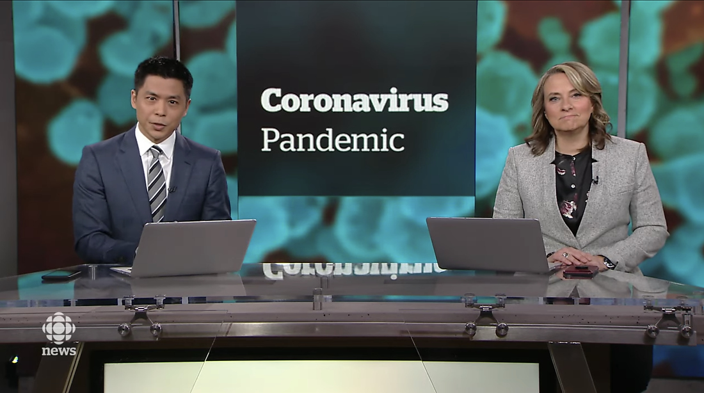

Gallary
History
Achivements
- 2016:Named the Best News Anchor Local award at the Canadian Screen Awards
- 2017:Named the co-host of The National show
- 2018:Named the Best News Anchor Local award at the Canadian Screen Awards again

2017
Andrew Chang soon became a well know Canadain journalist. His hard work soon paid off when he was titled the co-host of the show "The National". The National is well known show playing at 6 every night talking about the important events occuring in the world. It's one of the most popular show produced by CBC.TOC
2018
In 2018, Andrew recieved another Best News local anchor reward a second time.TOC